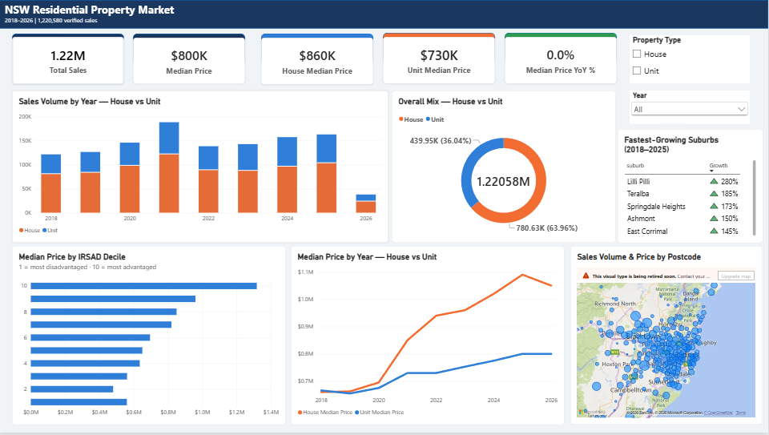

Cleaning, enriching, and modelling 2.2 million real NSW government property sale records into a verified data warehouse and interactive dashboard revealing how location, socio-economic profile, and property type drive housing prices across the state.

State-wide KPIs, the 2021 price boom across houses vs units, market composition, a postcode-level sales map, the socio-economic price relationship, and a live fastest-growing-suburbs leaderboard.
An interactive drill-down across 608 NSW postcodes' worth of suburbs, with a live Suburb vs. State comparison table against the state median.
Most public commentary on the NSW property market treats it as one undifferentiated number. This project builds the infrastructure to ask sharper questions of genuine NSW Government Valuer General sale-record data — not a sample — covering every residential transaction from 2018 to the current year.
The raw, messy government feed is taken through a full real-world pipeline: cleaning and validating 2.2 million rows in Python, enriching it with official ABS socio-economic indexes, designing a relational data warehouse in MySQL, writing analytical SQL with genuine window functions, and building a two-page interactive Power BI dashboard on top.
Government property data arrives as a raw weekly-snapshot feed with no deduplication, mixed units, and no quality flags — unusable without cleaning and validation first.
A sale price alone says nothing about genuine market value versus an area's socio-economic profile — without linking to demographic indexes, the two are easy to conflate.
Comparing one suburb against the state across 1.2 million+ sales isn't something a static spreadsheet can do — it needs a tool that recalculates as the question changes.
Loaded 2,206,232 raw records and resolved seven real data-quality issues, including 560,545 duplicate rows, mixed price scales, mixed land-area units, and inconsistent property-type labels.
Joined all four ABS SEIFA 2021 indexes, including IRSAD, onto the cleaned sales data by postcode — achieving a 100% match rate across every NSW postcode.
Normalised the data into a MySQL star schema: a fact_property_sales table referencing a dim_postcode_seifa dimension table, avoiding repeated socio-economic figures per postcode.
Wrote queries using LAG for year-over-year growth and NTILE for price-quartile ranking, including suburb-relative outlier detection comparing each sale to its own suburb's typical price.
Connected Power BI directly to the MySQL warehouse and built a full DAX measure library across a two-page, 16:9 state-wide overview and suburb-level drill-down.
In the single biggest boom year, house prices grew at roughly double the rate of units — consistent with the COVID-era shift toward space over apartment living.
Median price climbs near-monotonically from $555K in the most disadvantaged SEIFA decile to $1.3M in the most advantaged, confirmed independently in SQL.
The fastest-growing suburbs cluster around Albury-Wagga, Newcastle/Lake Macquarie, the Snowy Mountains and Hunter Valley — not Sydney addresses.
Removed from overlapping weekly government extracts — left unaddressed, this would have inflated every volume metric by roughly 25%.
11,854 sales flagged as likely non-market transactions by comparing each sale to its own suburb's typical price, not one statewide number.
Compare each transaction to its own suburb's typical price rather than one fixed dollar threshold — $150,000 reads very differently in a regional town versus Parramatta.
Given the near-2.3× price gap across SEIFA deciles, any valuation approach should incorporate a postcode's socio-economic context alongside property features.
Albury-Wagga, Newcastle/Lake Macquarie, the Snowy Mountains and Hunter Valley are already outperforming the capital — a concrete shortlist for further research.
Any pipeline ingesting a continuously-refreshed government source should build deduplication in as a standard early step — it corrected roughly a quarter of this dataset.
The cleaned, enriched, warehoused dataset is already shaped for a time-based train/test split and a regression or gradient-boosted model as a natural next iteration.